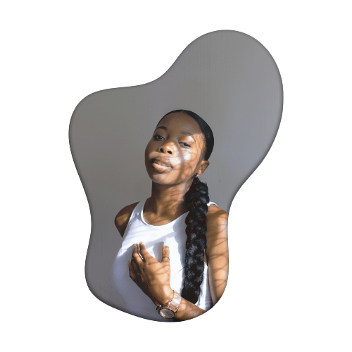

About


I am Jennifer, an artist
CLEAN, CRISP & FLY - the essence of my art!
As a self-taught artist, I have been honing my skills in painting celebrity
portraits for the past 4 years. My art is influenced by the music & culture
I was exposed to during my years of dancing. I make art because it's fun,
exhilarating yet peaceful.
I don't always find my art interesting, but it gives me great joy when strangers
seemed to be in awe of my work. I work primarily with acrylic paint which I use on
canvas. The use of this medium has allowed to create such vibrant & colorful pieces.
I have been applauded for the numerous of artworks I have designed, as well as been
given the opportunity to be featured on a newspaper which showcased my artwork
designed for BestDrive.
I'm a sucker for art that is aesthetically pleasing with a clean finished look,
but more importantly, I make sure that the artwork I make is valuable, memorable,
and delivered on time.